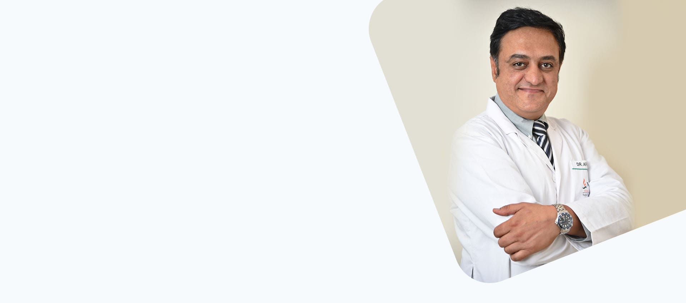

Best Neurosurgeon In NCR
Cervical Spine Surgery
The cervical spine is at risk for developing a number of painful conditions like Cervical degenerative disc disease,Cervical herniated disc,Cervical stenosis, Cervical osteoarthritis which needs surgery.
Read More
Spinal Stenosis Surgery
In Cervical Stenosis neck’s protective spinal; canal narrows due to trauma or degenerative changes. In Lumbar Stenosis Surgery there is narrowing occurs in the spinal region of the lower back.
Read More
Scoliosis Treatment
Depending on the degree of curve of the spine. The scoliosis treatment modalities are: bracing, underarm brace, Milwaukee brace
Read More
Cerebrovascular malformation
A cerebrovascular malformation is an abnormal blood vessel formation in the brain.
Read More
Dr. Arun : Top Neurosurgeon in Delhi
Dr. Arun Saroha is a skilled brain & spine surgeon and is the best neurosurgeon in Delhi. He was senior most in Neurosurgery at Artemis Hospital and Paras Hospital, Gurgaon. He is the top neurosurgeon in Max healthcare.
Work Experience:
He is the top neurosurgeon with two decades of experience in Neurosurgery & Spine Surgery.
Performed more than 8000 surgeries successfully
Trained many Indian/International surgeons
He is Visiting Consultant to Kenya, Nigeria, Iraq, Uzbekistan, and Sudan
Speaker at various national/international conferences & workshops
He has done many live spine surgery workshops & training courses
Postgraduate neurosurgery teacher recognized by National Board of Examinations

Frequently Asked Questions
Dr. Arun Saroha is the best neurosurgeon in NCR. He has member of many top spine societies like
NASS - North America Spine Society
AANS - American Association of Neurological Surgeons
NSI - Neurological society of India
ASSI - Association of Spine Surgery of India
AO Spine - Asia Pacific
Disc herniation is a condition which refers to a problem where there is a rubbery disc between the spinal bones. Dr. Arun Saroha is the top neurosurgeon in Delhi for treatment of disc herniation with 20 years of unmatched experience.
Dr. Arun Saroha is the top neurosurgeon in Delhi NCR for brain surgery. He is an accomplished neurosurgeon with more than 8000 of happy patients. He is skilled, focused and dedicated to his work.
TESTIMONIALS OF PATIENTS WHICH MAKES THE TOP NEUROSURGEON IN DELHI NCR
Dr. Arun is one of the best neurosurgeons in Delhi NCR. He is better than all other neurosurgeons in Delhi. He has great knowledge in this field and most importantly, he is always approachable. He will listen to you like no other can. You can ask as many questions as there in your mind. Thank you, Doctor!
He is a very genuine and down to earth person who took my father for a neuro disorder he was suffering from. All he advised was proper bedrest and right medication with a limited number of tests..
The top neurosurgeon in Delhi healed my problem of headache through the series of medicines and brain surgery. The tumour in my brain was removed without pain and I felt no pain during the surgery at all. Dr.Arun Saroha is indeed the best neurosurgeon who can heal all your brain ailments with a midas touch.
When I was looking for Dr.Arun Saroha, I found him at the best neurosurgeon hospital in Delhi and contacted the top neurosurgeon in ncr for my tumour removal treatment. And am perfectly happy with my choice as I am fully healed now and will recommend him to everyone now.
I had a tumor but wanted a Doctor who would remove it with minimal pain. I heard of Dr.Arun Saroha, the best neurosurgeon in Delhi, NCR and contacted him. He assured me that it could be removed by Minor laparoscopic brain surgery and I would feel no pain at all. I went ahead with it and now my tumour is healed now.
My aunt was looking for a top neurosurgeon in Delhi for her tumour. Dr.Arun Saroha came highly recommended and he removed her tumor with a minor brain surgery. Thanks to him she is fully healed now and is able to enjoy her passion of painting.
Dr. Arun Saroha is the top neurosurgeon in Delhi. I had a severe headache and I consulted so many doctors but there was just short lived relief. Then my sister asked me to consult Dr Saroha and I booked an appointment online. He diagnosed me well and observed my minute symptoms and prescribed the best medicines and since then I got permanent relief from my torturous headache. I feel so relaxed and happy. Thank You doctor.
Dr. Arun has treated my father for a Brain Haemorrhage and partial memory loss. He reviews my father’s condition from time to time and prescribes medicines and precautions accordingly. He is available 24*7 for help. He also emphasizes on the intake of natural food rather than prescribing only supplements. With Dr. Arun's help, my father has recovered to a remarkable extent. He is the top neurosurgeon in Delhi.
Dr. Arun Saroha is the top neurosurgeon in Delhi. He diagnosed me with Idiopathic Intracranial Hypertension and was extremely helpful through the treatment. I recommend him to anyone with brain and spine issues. His way was highly appreciable. He is the best neurosurgeon.
I want to thank Dr. Arun for such great help and treating my mother for the last 3 years after she suffered a stroke. Treatment rendered by Dr. Arun is commendable. He is very objective & thorough but had a huge " human" element. I recommend Dr. Ramandeep Dang for genuine advice and treatment. Avoids any required tests. Thanks a lot, sir. He is the top neurosurgeon in Delhi.
Dr. Arun Saroha is the top neurosurgeon in Delhi with more than two decades of experience. I am happy my child got his treatments from him. He is very patient and friendly. He is the best paediatric neurosurgeon. My son was comfortable and happy with him. Thank you doctor.
I consulted Dr Saroha with my disc herniation issue. He suggested a minor surgery. And under his supervision I had successful surgery. He is highly dedicated to his work. He is brilliant with surgeries. I feel so happy I consulted him. Whenever I feel uncomfortable with my spine or back I visit him and he is humble enough to give me his time and patience. Many thanks to the doctor. He is the top neurosurgeon in Delhi.
I had severe spinal injury because of an accident and I visited Dr Saroha. He is the top neurosurgeon in delhi. He is grounded and a good listener. I was very comfortable under his supervision. He performed a minor surgery and I got permanent relief from my spinal injury. Thank you Dr Saroha.
Dr Saroha performed neurosurgery on my child and provided best care and handled his anxieties with patience. He is the top neurosurgeon in Delhi and I am happy I consulted him. He has an easy online booking facility with free online consultation. My son is fit, fine and healthy now. All thanks to Dr Saroha.
My brother met an accident. He had severe spinel injury. We visited Dr. Arun Saroha. He is very experience doctor. He is very patient and friendly. Dr. did my brothers surgery and heald him completely. Dr.Arun Saroha is top neurosurgeon. I recommended dr arun saroha .
Free Medical Consultation
We provide a free medical consultation for our patients, Once you submit the request, our office will contact you within one business day to schedule your appointment.
- Explain your health concerns.
- A Specialist will answer your questions.
- Review your case documents.
- Follow up your medical condition.
- Check your surgery result.